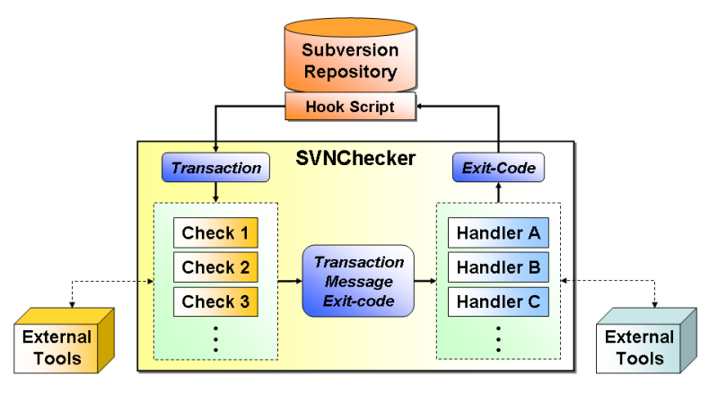

Thanks everybody for voting for a new name!
You can visit the new project home of RepoGuard here.
Posted by Malte Legenhausen
We just released the minor enhancements version 0.3 of the SVNChecker, you can get it from the download section.
We just released the new bugfix version 0.2.1 of the SVNChecker, you can get it from the download section.
SVNChecker is a framework for Subversion pre-commit and post-commit hook scripts.
The SVNChecker allows tightly integration Subversion into existing work and development environments and to perform a variety of checks of the committed source code. The major use cases are the integration of Subversion with issue and bug tracking systems and the check of source code against coding standards. But, the SVNChecker can be used for any other use case where a tight integration with the source code management is necessary.
SVNChecker is designed and developed as an open extensible framework. By writing appropriate plug-ins, it can be extended to almost any kind of "check" (for example, to check source code or to query external databases). This can be used to enforce a variety of regulations of the software development process. By developing "handler" plug-ins, the result of checks can be handled in almost all needed ways (for example, for sending emails, updating databases, or running any given external software).

For further information you may take a look at the documentation.
| Name | Summary |
|---|---|
| AccessRights | Check access rights on files. |
| CaseInsensitiveFilenameClash | Tests, if a file with the same filename (ignoring the case) already exists in the repository. |
| Checkout | Checkout files from the repository to file system locations. |
| Checkstyle | Checks java files for coding style errors using Checkstyle. |
| Keywords | Checks for svn:keywords on all added files in this commit. |
| Mantis | Checks if a log message contains one or more valid ID of an Mantis issue. By default, the log message must contain a line with 'MANTIS ID <#>', where '<#>' is number of an issue ID that is set to status 'in_progress' and handled by the correct user. |
| Pylint | Checks Python files for coding style using Pylint. |
| RejectTabs | Reject files with given extensions that include leading tabs. Contributed by Adam Byrtek. |
| UnitTests | Tests, if a unit test exists for a given Java class. |
| XMLValidator | Checks XML files for correctness. |
| Name | Summary |
|---|---|
| Console | Simply print the message to the console. Either to stdout or to stderr. |
| File | Log the message into a file. |
| Send the message as email. | |
| Mantis | Append the message to one or more Mantis issues as note and update the SVNRevision field. |
The SVNChecker is developed mainly by the Simulation and Software Technology divison of the German Aerospace Center (DLR). We are happy about any support for this project. For example, you might participate as a developer, bug reporter or simply by telling us your needs. Especially, if you have written additional checks or output handler, we would be happy to include them into the SVNChecker distribution.
Just visit our forums or join our mailing lists on Tigris.